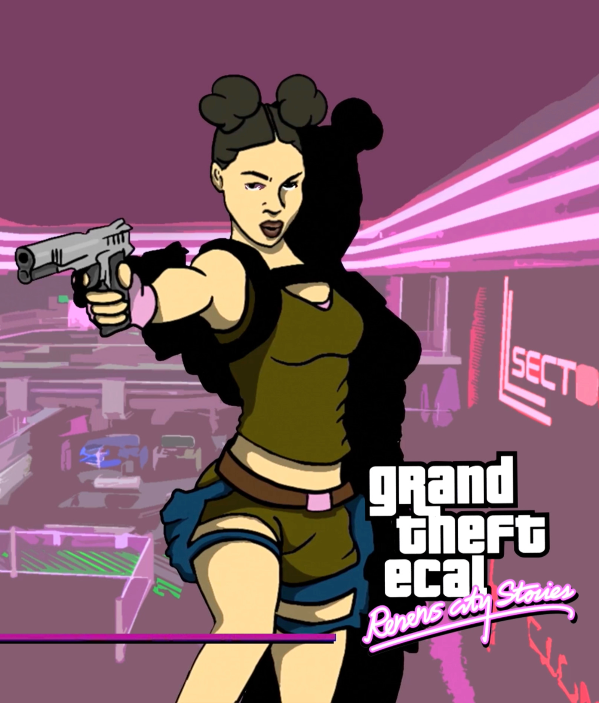

LAURINE GIGANDET
Curious and multidisciplinary by nature, I'm soon-to-be graduate in Media & Interaction Design at ECAL.
I enjoy exploring different fields and quickly learning new skills.
My work sits at the intersection of digital and hands-on practices. I'm passionate about designing
interactive experiences while also working with physical materials and manual processes.
This combination strongly influences the way I approach projects.
Throughout my studies, I’ve dedicated a significant amount of time pushing my work further.
I’m open-minded, passionate about discovering new things, and always eager to learn.
Alongside my design practice, I also develop a personal artistic practice through nail art, where I
explore color, texture, and form on a different scale.